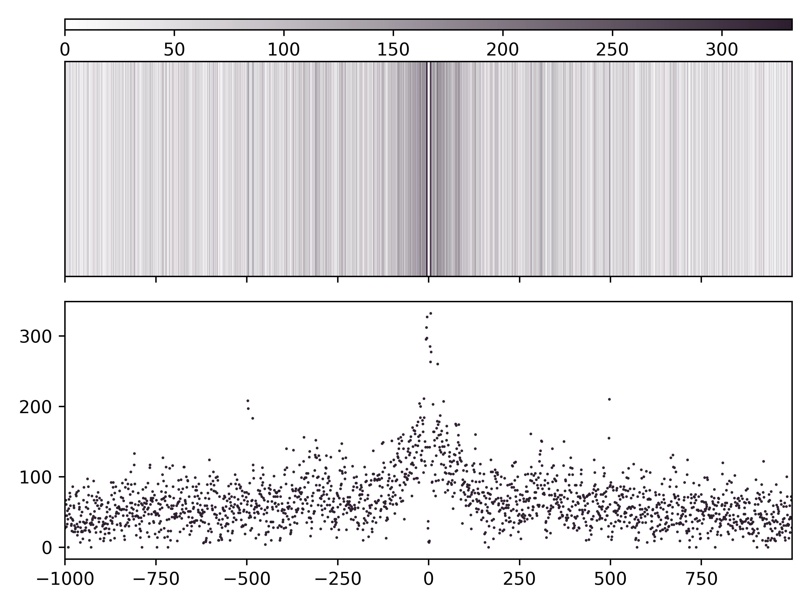
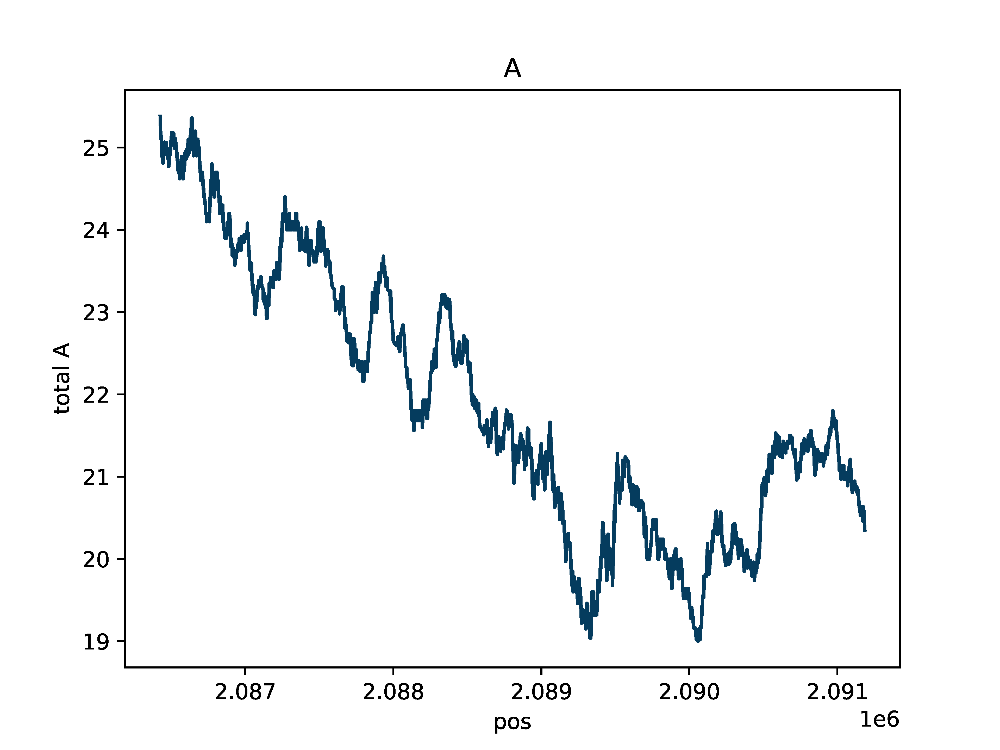
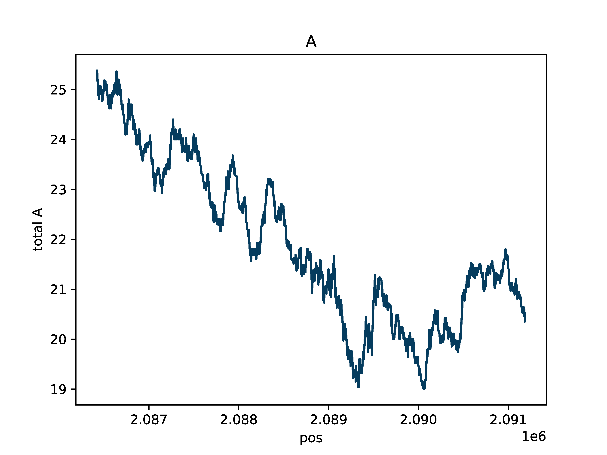
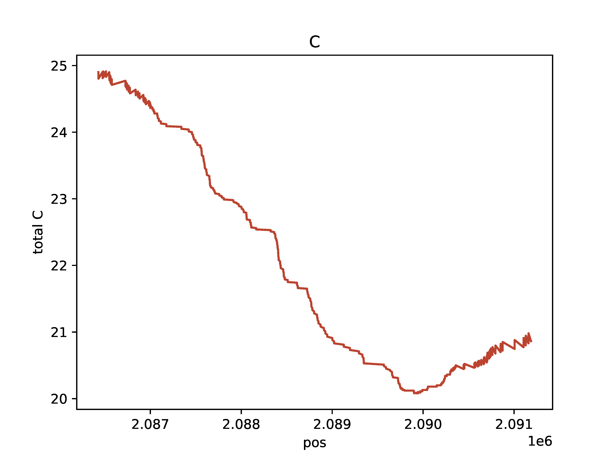
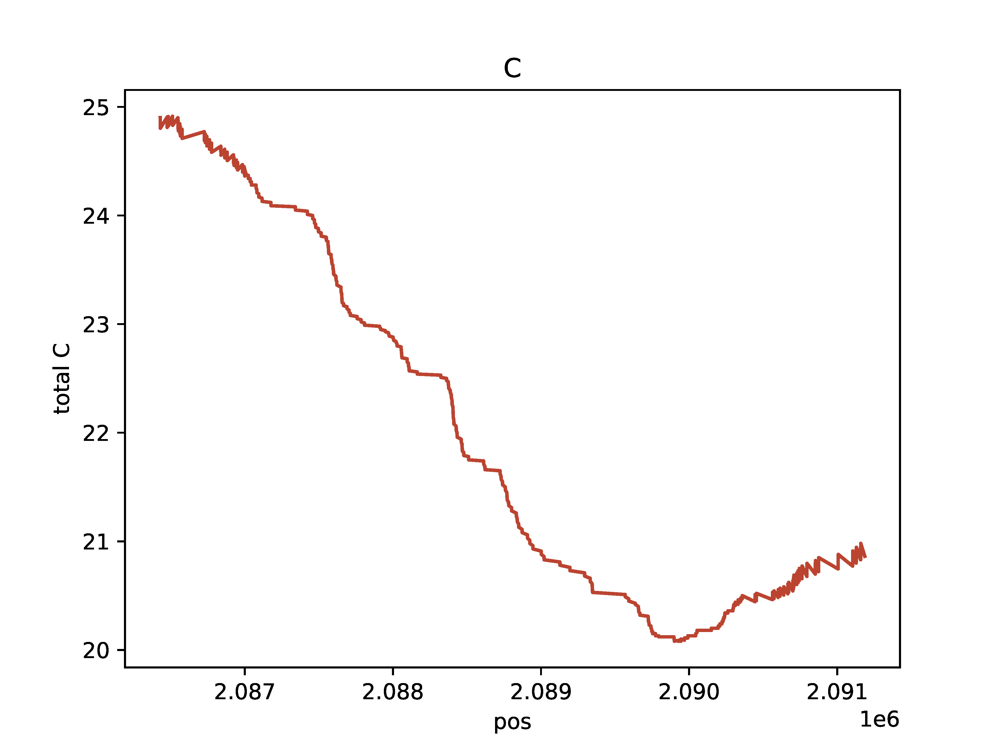

Tutorial
Follow the steps here to run the dimelo package with a test dataset.
Files needed
Files can be found in directory: dimelo/test/data
ctcf_demo.sorted.bam
ctcf_demo.sorted.bam.bai
ctcf_demo_peak.bed
ctcf_demo_not_peak.bed
Steps
Run below commands and ensure your output matches the expected plots below. This tutorial walks through running functions from python, but the dimelo package can also be used from the command line (see Example Gallery).
>>> import dimelo as dm
>>> bam = "dimelo/test/data/ctcf_demo.sorted.bam"
>>> sampleName = "CTCF_demo"
>>> outDir = "out"
>>> bedPeak = "dimelo/test/data/ctcf_demo_peak.bed"
>>> bedNotPeak = "dimelo/test/data/ctcf_demo_not_peak.bed"
>>> dm.qc_report(bam, sampleName, outDir)

>>> dm.plot_enrichment(bam, ['CTCF_peak', 'CTCF_not_peak'], [bedPeak, bedNotPeak], "A", outDir, threshA=190)

>>> dm.plot_enrichment_profile(bam, sampleName, bedPeak,"A+CG",outDir,threshA=190,threshC=190)
Aggregate rolling average fraction of methylated bases

Single molecules with binary mA and mCpG colored

A base count

CG base count
>>> dm.plot_browser(bam, sampleName, "chr11:2086423-2091187", "A+CG", outDir, threshA=153, threshC=153, static=True, smooth=100, min_periods=10)
 

 
